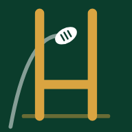

Colle ton token GitHub (le même que celui utilisé pour les Raccourcis iOS — accès Contents lecture/écriture sur Aubin65/personal_coach).
Le token reste uniquement sur ce téléphone (stocké localement) — jamais envoyé ailleurs qu'à l'API GitHub.
🏉 Entraînements club — jours habituels
Annulation ou déplacement : pose « Repos » sur le jour, et « Rugby » sur le nouveau, avec les icônes ci-dessous.
Icônes = poser juste le type du jour (structure rapide) ; le bloc ouvre le détail complet.
Décris ce que tu veux changer — le coach reconstruit le planning en conséquence (pas juste un remplacement mécanique).
Où ?